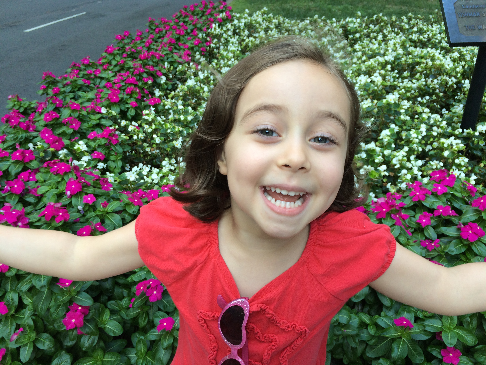

I grew up with my family in Brooklyn NY. Both my mother and father's family are from there as well as all of my grandparents. During my high school years, we moved to Connecticut. After those years, I attended Syracuse University where I received a BA in liberal arts.
When I graduated from college I was ready to take some time to search for a direction and to have fun. I decided to travel west and reside in a Colorado resort town known as Telluride. After many years of snowbaording, I moved back to NYC where I met my wife Beth. Beth and I spent a couple of years exploring the NY nightlife before we got married. One year after we got married, we had a daughter and named her Madeline after my late mother. My daughter is my life and nothing makes me happier than her.